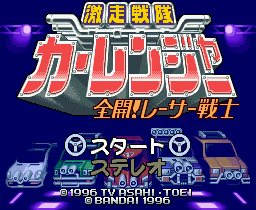

Car Ranger - Sufami Turbo Games

Controls
- A button: [not used]
- B button: Jump
- X button: [not used]
- Y button: Punch
- L button: [not used]
- R button: [not used]
- Start: Pause
- Select: [not used]
You control one of the five Car Rangers. You go along defeating enemies and collecting parts.
At certain points, there are platforms where you pushing Up will take you to a place to
obtain items or parts. By punching vehicles and platforms with a question mark, you can
collect parts as well as weapons. Haven't played it long enough, but there is a gauge that fills
up when you collect 60 parts. I am assuming you get a huge power-up when you fill the entire gauge.
Anime Video Game Resource Center © 1998 by Luis A. Cruz